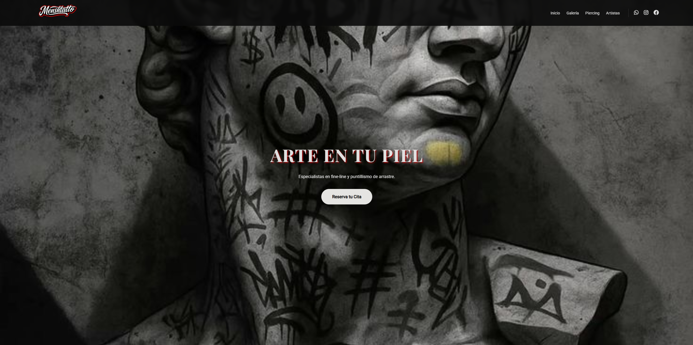
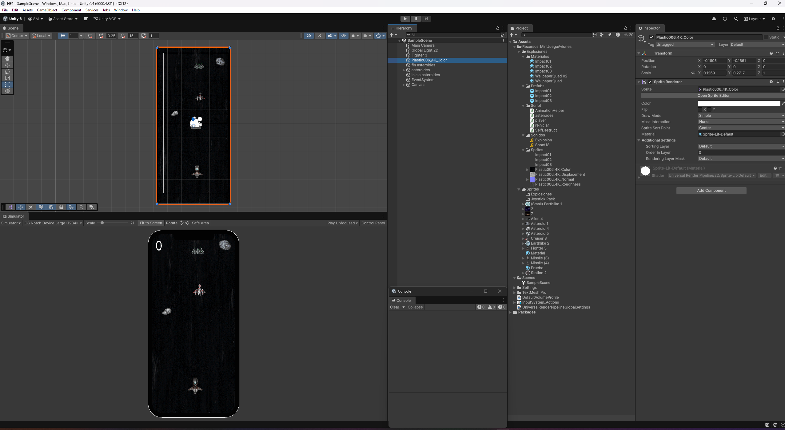

Mis Proyectos
En esta sección encontrarás algunos de los proyectos que he desarrollado mientras estudiaba DAM y en mi tiempo personal.
Mi objetivo con cada proyecto es aprender algo nuevo y mejorar mis habilidades en desarrollo de software: desde el diseño de interfaces hasta la lógica de backend, bases de datos y despliegue.
Proyecto 1: Desarrollo Web para Taller
Desarrollo integral de una página web para un taller mecánico utilizando HTML5 y CSS3. El enfoque principal fue crear una interfaz limpia para la exposición de servicios y la gestión de citas.
Visitar WebProyecto 2: Estudio de Tatuajes
Actualmente me encuentro desarrollando una página web dedicada a un estudio de tatuajes profesional. Este proyecto se encuentra en fase de desarrollo y todavía no se puede mostrar el resultado final pero sin duda tendrá un acabado pulido y muy personalizado.

Proyecto 3: Mini-juego Espacial en Unity
Mi primer prototipo funcional desarrollado en Unity utilizando C#. Es un shooter de naves en 2D donde he puesto en práctica la lógica de colisiones, prefabs, y el control de físicas en un entorno de motor gráfico.

Proyecto 4: Web para Empresa de Electricidad
Próximo desarrollo en mi lista: una plataforma web corporativa para una empresa de servicios eléctricos. El objetivo es crear una interfaz técnica pero amigable, optimizada para la gestión de servicios y contacto rápido.
Este blog también es un proyecto personal, creado para documentar mi aprendizaje y mostrar mi pasión por la tecnología.